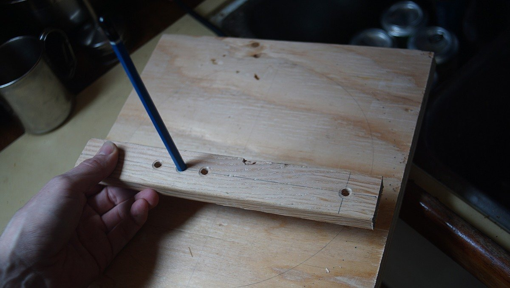

repair
Doing maintenance and repairs yourself will bring the cost down. Offloading work to professionals if you can afford it is fine, but it's good to know how to take care of your boat. You may not always have access to workers if sailing to far-flung islands.
A failure to maintain items regularly will cost more later. We recommend keeping a log of the repairs, part replacements that is done to your boat. Many parts have a limited lifespan, so knowing when they were replaced last will help prevent breakages. If leaving for a big sailing trip with spares, install the spare and keep the other one as the spare. If you do this, you'll learn how to change the part and what tools you need to do the job.
When doing repairs, use quality materials and products, research them thoroughly before a project instead of relying on brand names.
maintenance checklist
Short list:
- Engine (see engine care for detailed list)
- The boat’s hull (bottom) & topsides, see hauling out
- Electrical systems, see electrical refit
- Plumbing, see thruhulls
- Moving parts (hinges, tracks and zippers)
- Canvas and upholstery
Long list:
- Anchor chain (markings, wear)
- Anchor rope rode (wear, markings)
- Anchor shackles (check pins, seizing wire condition)
- Windlass (service regularly or it will seize up, see windlass removal)
- Deck winches (clean, regrease)
- Running rigging (check for chafe). Wash in soapy water and rinse in fresh water
- Standing rigging (check for cuts in the wire, cotter pins, mast terminations)
- Mast head (lubricate sheaves), check rigging connections, instruments.
- Chainplates (check for pit corrosion & stretched bolt holes, connections to hull). If going through deck bed with butyl tape.
- Check for galvanic corrosion between dissimilar metals (see effect of combining dissimilar metals.
- Test both manual and automatic bilge pumps(fuses blow sometimes)
- Test gas sensor(to make sure they work)
- Thruhulls (check for corrosion, make sure seacocks move freely)
- Plumbing (check 2 hose clamps(2 are necessary per hose, misalign them when re-installing new ones) for corrosion, replace if necessary)
- Check anodes (on shaft, engine, boat, sail drive)
- Rudder (check for stress cracks, play in bearings, check rudder shaft seal)
- Rudder steering (grease steering cables if needed)
- Dripless shaft seal(replace bellow and accompanying bits every 7 years)
- Stern pack glanding (may require repacking)
- Batteries (check electrolyte if wet lead acid, check connections are tight)
- Mainsail (check for wear in stitching, re-stitch if necessary with UV-resistant sail thread. Patch up holes with dacron tape and sail repair thread, check sail slides for wear)
- Headsail (like mainsail)
- Furling drum(if furling sail). Wash, regrease ball bearings
- LPG (check high pressure hoses for wear, make sure connections are tight(check with soapy water), test solenoid on/off)
- LPG tank (get re-certified if expired, check for corrosion at valves)
- Auto-inflating life jackets (replace air cartridge if indicator is red, infate using mouth tube to test for leaks), wash with freshwater)
- Flares (check expiry, replace)
- EPIRB or PLB (check registration is still valid)
effect of combining dissimilar metals
Take care when choosing fasteners for your boat. When dissimilar metals are placed in contact with each other, introducing an electrolyte(like fresh or saltwater) will trigger corrosion.
When water(electrolyte) is introduced onto metals that are very galvanically incompatible(ex: stainless steel and galvanized steel), one metal becomes a negatively-charged cathode, and the other a positively-charged anode. Electrons flow from the one to the other by way of the electrolyte. The two metals act as a battery and transfer electrons from one(the cathode) to the other(the anode).
When selecting fasteners do not mix metals shown as red or yellow in the following chart. The following chart shows the safety or danger of mixing metals:
 Author and source unknown
Author and source unknown
- Red = Most Problematic
- Yellow = Problematic
- White = Safe
cleaning products
When it comes to cleaning, polishing or abrading, you don't need a crazy arsenal of products. Below is a list of recommendations for household cleaning, or maintenance aboard a boat.
| All purpose cleaner | Mix of 500 ml hydrogen peroxide(3%) with 2.5 ml(40 drops) of lavender and lemon essential oils, and 0.6 ml(10 drops) of peppermint essential oil. Leave on surface for several minutes before wiping clean. Store in a dark-coloured bottle. |
| Chrome | Apply apple cider vinegar on a soft cotton cloth to rub it clean. Then, use a fresh cloth with a dab of baby oil to make it shine. |
| Copper | Make a paste of either lemon or lime juice and salt. Rub gently to clean. |
| Aluminum | Cream of tartar and hot water. In a dish, add a few spoonfuls of cream of tartar, and stir in water to create a thick paste. Rub over the aluminum surface with a soft cloth. |
| Acrylic | Use a mild dish soap. Mix about 1 L of water with a few drops of dish soap in a bowl, agitate to create suds. Dip cloth into mix, clean acrylic gently. Wipe with a clean, damp rag, and follow up with a soft, dry rag to collect leftover moisture. |
| Plastic | Use a mixture of 1:2 white vinegar and warm water. |
| Brass | Coat the cut half of the lemon with table salt and rub it over the surface, re-coating the lemon with salt as needed. Buff to a shine with a clean, dry cloth. |
| Cast iron | Immediately after use, clean with plain hot water and a sponge. Stuck on food can be removed with a paste made of coarse salt and water. Dry with a towel, or over the oven at a low flame, and coat with a layer of oil. |
| Stainless steel | Wipe down with freshwater, or use a mild soap solution and warm water for tough stains. |
| Fibreglass | Dislodge debris with a scrubbing brush, rinse off with fresh water. For rust stains, make a paste of baking soda and water. Use a soft cloth and gently rub mixture onto the stain. Leave for 1 hour. For heavy yellow waterline and rust stains try Grunt emer-gel, a phosphoric acid-based product. Wear gloves while using it, as it is an irritant. |
| Wood dishes | Wash with mild soap and warm water. Dry immediately after washing. Never soak in water or put it away wet. Every month, apply a coat of food-grade oil (we use coconut) to keep the wood moisturized. |
| Wood cutting boards | Same basic treatment as wood dishes. Before adding oil, scrub clean with lemon and salt. Sprinkle board with coarse salt. Using a lemon half, cut side down, scour the surface. Let sit for 5 minutes, scrape mixture away, rinse clean and let air dry. |
| Sails | Wash with cool water mixed with dishwashing liquid. Let dry thoroughly before storing. |
| Mildew | Use white vinegar or lemon juice full strength. Apply with a sponge or scrubby. |
| Head | Sprinkle baking soda into the bowl, scrub with a brush. |
| Sink clog | Pour 120 ml or more of baking soda down the drain, then add 250 ml of vinegar. Plug it up, and let it sit 10-15 min, then pour more hot water down. Repeat until clear. |
| Clothes | Mix 2 cups of washing soda with the gratings from one 140 g bar of castile soap. Use 15 g for light loads, and 30 g for heavy loads. To whiten, disinfect, deodorize clothes of dish cloths, use sodium percarbonate at a ratio of 15 g per 5 L. |
toolbox
Basic tools to make repairs to the various parts of your boat.
Carry only those tools that fit the fasteners that hold the various bits of your boat together and you will have what you need and won’t be burdened by what you don’t. — Don Casey
Starter kit:
- Wire cutters
- Hammer
- A set of wrenches
- Socket wrench kit
- Pliers (needle nose)
- Vise-grips
- Adjustable crescent wrench
- Serrated knife
- Flat and round files
- Yankee-type push drill
- Hex wrench set
- Wire brush (cleaning bolts, metal etc)
- Digital multimeter
- Crimping tool (plus connectors and terminals)
- Many sizes of phillips head, straight-slot screwdrivers (or Multi-Bit Screwdriver)
- Electrical tape
- Stitching awl (to sew heavy materials, fast and with ease)
- Hack saw

Advanced kit add-ons. Many of these are useful if you plan to do most of your own work.
| Tool | General uses | Boat uses |
|---|---|---|
| Grinder | Cut metal, sanding, polish metal or wood etc | Polishing prop, cutting SS pipes or sheeting |
| Dremel | Cutting, sanding, etching, engraving wood or glass | Sharpening tools, drill bits, customizing wood with art, cutting small areas with precision. |
| Power drill | Drill holes through wood, metal, SS etc | Holes for hardware etc. |
| Orbital sander | Sanding | Fairing fibreglass, or rounding edges of wood. |
| Screw extractor (E-Z outs) | Removing broken bolts from wood or metal | Extracting seized bolts in engine body |
| Tap and die kit | Re-threading stripped bolt holes | Engine body hole repair |
| Bolt cutters | Large, cutting through heavy wires or metal | Cutting locks or rigging wires |
| Small hatchet | Cutting, whittling wood or other | Cutting lines, or through walls in an emergency |
| Shears | Heavy duty cutting | Cutting through heavy canvas or rope |
| Pipe wrench | Turning threaded pipes and fittings | Tightening or loosening galley plumbing, or stuffing box |
| Strap wrench (metal band) | Loosening and tightening pipes, fixtures and cylindrical items | Loosening or tightening oil and fuel filters on engine |
| Hand-sewing needles | 5 assorted straight and 2 curved sailmaker's needles, plus assortment of carpet needles | Sail, clothes or canvas repair |
| Caliper | Precious measuring | Measuring inside of pipes, diameters of tubes etc |
| Hole saws | Boring round holes | Cutting holes for wires, or instruments through wood or fibreglass. |
| Small manual pump | Extracting water, oil or sewage water | Oil changes, pumping out bilge water |
| Heat gun | Stripping paint, shrink wrapping, softening adhesives or plastics | Softening hoses for insertion, shrink wrapping electrical connections etc |
| Right angle screwdriver | Tightening or loosening screws with limited clearance | Removing screws from engine |
| Jigsaw | Cutting holes, shapes and curves in wood | Making complex custom wood projects |
| Small bench vice | Holding wood or metal in place for cutting or drilling | — |
We prefer not to have too many overly specialized tools that we only ever use once every 3 years, like a rivet gun, a grease gun or a swage tool. In a boatyard, there is always someone who will have these, and we're certain that they'll be more than happy to lend them to you.
bike on a boat

Bike tool essentials:
Note that we have single speed bikes, no derailleurs, so that simplifies things a little bit. We chose leaner bikes because we knew we'd be taking the wheels on and off often, and because it makes for a lighter bike(ours are aluminum) to store onboard.
- Tire levers (when replacing tubes)
- Spare tubes (check valve length and your wheel diameter)
- Floor pump with gauge (always fill at recommended PSI written on tire, otherwise you run the risk of getting punctured more easily)
- Hex wrench set (that fit all the hardware on your bike, for adjusting seat, pedals, wheels, etc)
- Open end wrenches (that fit the hardware on your bike)
- Tube patch kit
- Chain breaker (for when removal is necessary for cleanup)
There are many more tools to get if you wish to do a full bike tune-up, but in all these tools are way fine for most people, and it is what we carry onboard pino.
Note: Keep some old bike tubes, they are useful for self-steering a boat at sea (instead of using bungees). We used them a lot on long ocean passages because we didn't have a windvane, or an autopilot. See Thoughts, Tips and Tactics for Singlehanded Sailing by Andrew Evans for more information on steering a boat with bungees (or bike tubes).
Do the bikes rust? No, our bikes don't rust, the frames are aluminum(forks are carbon) and we keep the steel chains and hubs well-oiled(3 in 1 oil). Always apply lube to a dry chain.
Where do you keep your bikes?. When in port for a long time, we keep them outside, locked to a strong point on the boat. When we move the boat, or during the winter/rainy season, we stow them inside. We stow the bikes inside in either the v-berth, or quarter berth. The best way to stow them is to take both wheels off, to remove the pedals, turn the handle bars sideways, and to tie all components with straps. We cover the bikes with a bike bag.
The bags are nothing special, but allowed us to carry them with us aboard trains while in Japan.
hauling out

Tasks like hauling-out (to get the bottom painted) is once every 2-3 years for an offshore boat, but can be every year otherwise. How often you haul out depends on your personal preference.
When out of the water, don't forget to...
- Check your cutlass bearing (push up on the prop to see if there is any play, there shouldn't be).
- Grease the inside of your prop with calcium sulfonate(No. 130-AA) if you have a Max Prop.
- Replace the boat zincs (shaft, hull(if any)).
- Replace or service your shaft seal. Dripless types need to be replaced out of the water, because it is necessary to undo the engine coupling to pull back the shaft to remove, and insert a new bellow(see propeller maintenance to see our dripless seal replacement).
- Check the hull for blisters.
Bottom paint: If we want to wait longer between haul-outs we paint more coats (2-3), otherwise 1 every year. We use ablative anti-fouling. Ablative wears out over time and when it does it will become less effective at repelling sea critters. Eventually, stripping the bottom of all paint down to the gelcoat is necessary, paint can build up and the older layers will start to flake off, making it difficult for new paint to adhere to the bottom. If painting the bottom from gel coat, adding a layer of primer is necessary so that the antifouling paint can adhere.

Strut and prop: Coating your prop and strut with PropSpeed (see image below) works well to keep growth off, it works well in high-growth areas (we used it in New Zealand and Japan) but it is very expensive. Sailors often buy the product to share with others (helps keep costs down). There are also zinc-based sprays, or paint, that work quite well. See propeller maintenance if you want advice on maintaining a feathering propeller.
If your boat comes out of the water for a haul-out every year, a cheap alternative is to coat metal with zinc cream(penanten) or anhydrous lanolin (reported by others). Both products are available at the pharmacy. Note that it doesn't last very long.